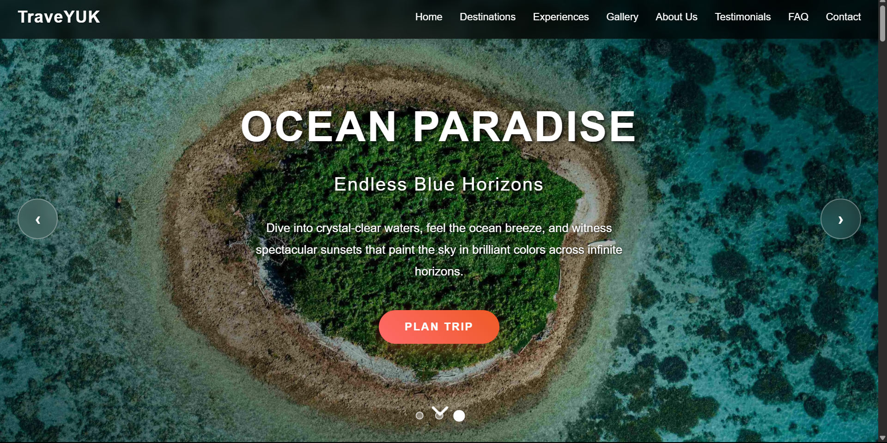
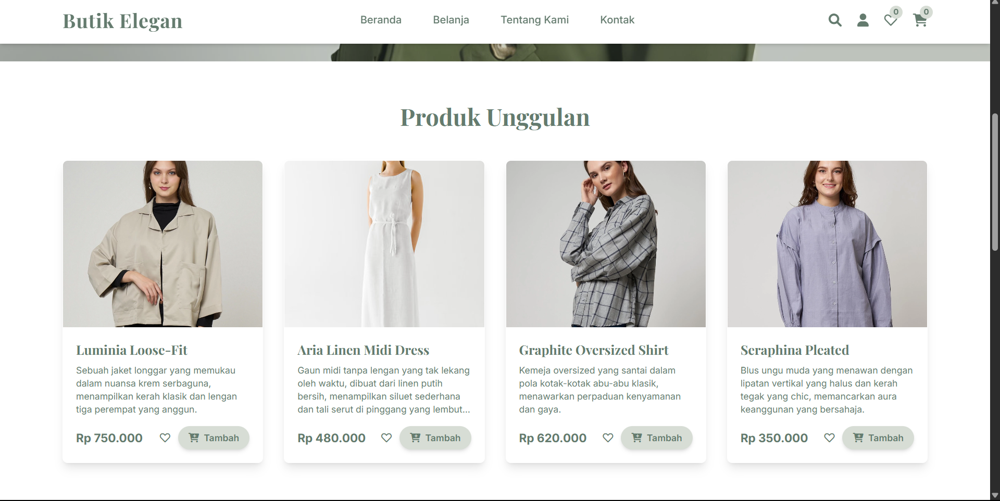
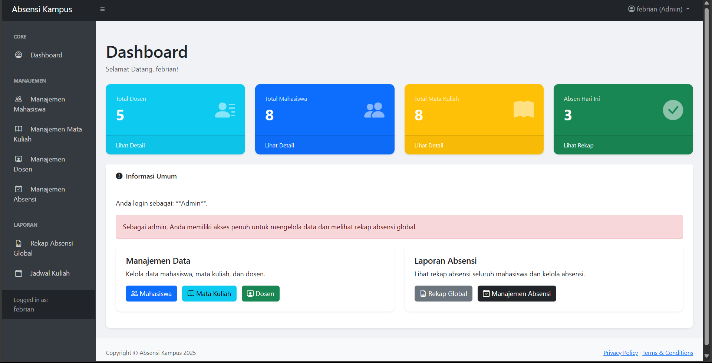

My last Projects




"Otak manusia adalah mesin paling kompleks di alam semesta — dan pemrograman adalah cara kita belajar bagaimana menyusun logika yang bisa dimengerti oleh mesin lain. Saat kamu menulis kode, kamu sebenarnya sedang mencerminkan cara pikirmu sendiri."
What People Say
"safi i is a quick learner who brings fresh perspectives to every project. His ability to adapt and contribute meaningfully is impressive for someone new to the field."

"Working with safi i was a pleasure. His enthusiasm for learning and attention to detail made him a valuable team member on our UI redesign project."

"safi i public speaking skills are exceptional. He presented our project to stakeholders with clarity and confidence that belied his junior status."
Get In Touch
GitHub
github.com/safiiLocation
Tuban, Surabaya